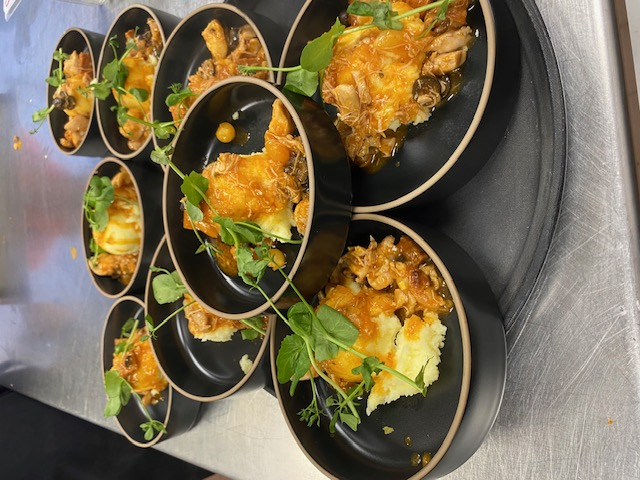
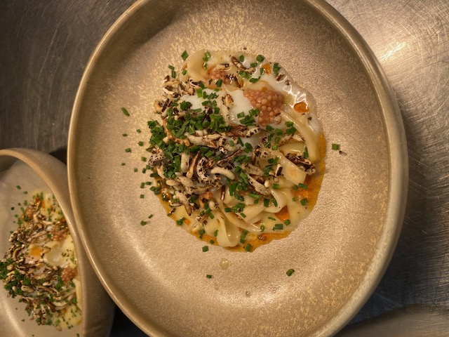
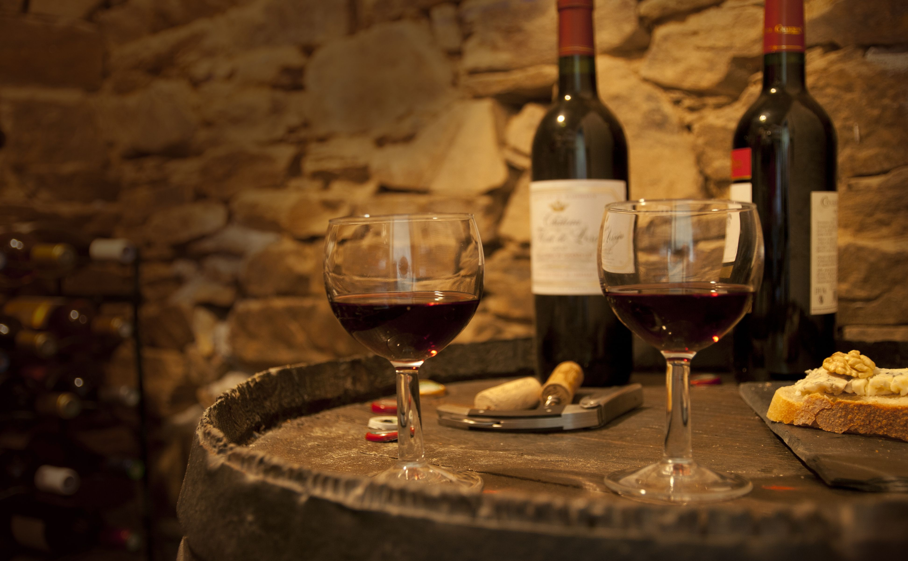

Interactief & hands-on
Cooking Experiences
Koken als beleving — samen aan het werk in de keuken onder begeleiding van de chef. Professioneel én leuk, perfect als teambuilding of een uniek diner met vrienden.
Cooking Experiences
Samen koken, samen beleven.
Voor teams die op zoek zijn naar een interactieve en verbindende ervaring, biedt TheCook.nu een concept waarbij u in duo's samen een diner bereidt.
Ieder duo verzorgt een gang, waardoor u gezamenlijk kookt voor elkaar en de avond stap voor stap opbouwt.


Op basis van een vooraf afgestemd menu verzorgen wij alle ingrediënten en bijbehorende recepturen. Dit kan plaatsvinden bij u thuis of op locatie, volledig afgestemd op de setting van uw team.
Desgewenst begeleiden wij het proces met een chef, die instructies geeft en ondersteuning biedt tijdens het koken.
Een toegankelijke en smaakvolle manier van teambuilding, waarin samenwerking en beleving centraal staan.
Wijn Arrangement
Wijn per fles
De wijnen worden geleverd per fles, waarbij de prijs bestaat uit de inkoopsprijs plus een vast kurkengeld per fles, met een vooraf afgesproken maximale inkoopprijs.
Het kurkengeld dekt mijn werkzaamheden zoals research, inkoop en het dragen van het inkooprisico. Je betaalt uitsluitend voor de flessen die daadwerkelijk worden geopend en geserveerd.
Wijnarrangement per glas
Daarnaast kan ik een bijpassend wijnarrangement per gang verzorgen, waarbij elke gang wordt begeleid door een zorgvuldig geselecteerd glas wijn. Dit zorgt voor een complete en verfijnde smaakbeleving, vergelijkbaar met een restaurantervaring.
